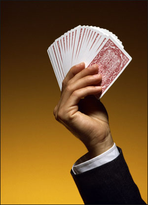
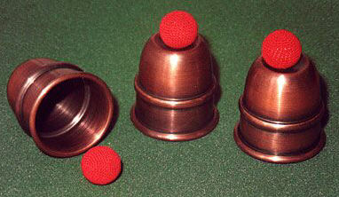

You
can learn how to entertain others with magic! Mr. Palur can teach you everything
from the rudimentary basics of slight-of-hand, to professional showmanship
and stage presence. He can teach you the business side of "show business,"
and help you get paid gigs! Magic is a fun and rewarding hobby, as well as
a lucrative profession.
Jack
will give you "hands-on" lessons, that will cover the methods, utilitarian
moves, and the presentation of each trick. When you are finished, you will
have the confidence and know-how to fool the best of them!
These
are great skills for adults, like Bartenders, School Teachers, Librarians,
Summer Camp Counselors, Day-care Providers, Actors, Comedians, and even CEO's
of large corporations!
It is especially good for kids. It builds self esteem, introduces them into
a wonderful, wholesome hobby, and improves their manual dexterity and confidence.
Many children interested in magic at an early age, grow up to become multi-million
dollar performers! It is simply a great way of making a living!
Lessons are arranged to your schedule. You can set as many or as few lessons
as you wish. Meet once a month or once a day, in the evenings or in the mornings;
when ever it is convenient to you!
Lessons
are minimally an hour, but can be longer if you wish. You
will not just learn the "secret" of a trick. You will come to understand
the presentation and how you can affect audience's lives with entertainment.
Jack
can teach individuals by appointment. He can adapt to any students schedule
and learning needs. Call today for open dates and costs!
Attention
Libraries, Schools and Other Educational Institutions:
Magician
Jack Palur offers a great program for kids between the ages of 7 - 18!
It
is an hour-long presentation teaching the basics of close-up magic, including
the use of every day objects, utility moves to develop dexterity and build
a magic act, as well as showmanship and the fundamentals of magical performance.
Each participant will learn at least 2 - 4 full tricks and witness many more
slight of hand routines, right under their noses.
There
is no stage or fancy props, just one-on-one instruction on how to become a
magician or a better performer. Mr. Palur has been teaching this mini-course
in schools and libraries in the Northern Ohio area for over 25 years! He can
work with recommended books, study programs, and customize the presentation
to meet the needs of the participants.
This
is "hands-on" training
where each student uses the necessary props to produce miracles on
their own. Kids will build confidence
and showmanship as well as the history behind magic as
a performance art.
This
program is great for Scouts
and other youth organizations!
Mr.
Palur Selected as MTA for Artworks!
Jack
Palur was selected as the Magic and Showmanship
Master Teaching Artist for Young Audiences of Northeast Ohio's Artworks Apprentice
Program. Jack taught nine students from around Northern Ohio magic, showmanship,
comedy, scripting, and a whole host of other entertainment subjects.
 About
Jack
About
Jack
Jack Palur has been teaching and performing magic for the last 40 years. Jack
owns and operates J.P. Productions, a talent agency in Northern Ohio. Jack
does close-up magic for pubs and restaurants and private parties. He is also
one half of the comedy magic team of the "Kaputska Brothers." Jack
also plays "Professor Fineous Mildew-heimer," a children's comedy
magician.
Jack
has taught theater and directed over 25 theatrical productions. He has taught
magic at summer camps and for youth organizations, including Young Audiences
of Northeast Ohio's Artworks. He owned and operated an improvisational company
for 10 years, a large retail hobby store for 17 years, and was a movie critic
on a local television station. Jack has a Degree in Liberal Arts and Business,
and a Technical Degree in Broadcasting.
Jack lives in Northern Ohio with his Wife, Daughter and cat, Ming.
Contact Information:
Magic
and Showmanship Instruction
802
Sheffield Road
Sheffield Lake, Ohio 44054
Office:
(440) 949-1047
Fax: (440) 949-1047
Jack@JPPOhio.net
Copyright
© 2012 JP Productions All Rights Reserved